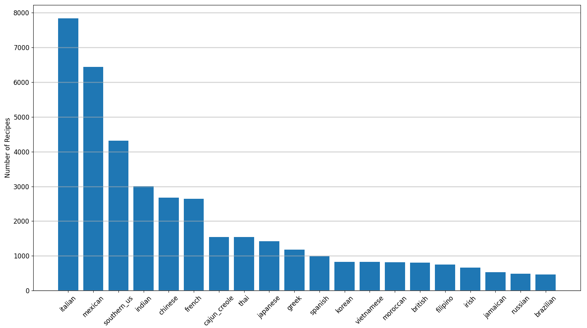
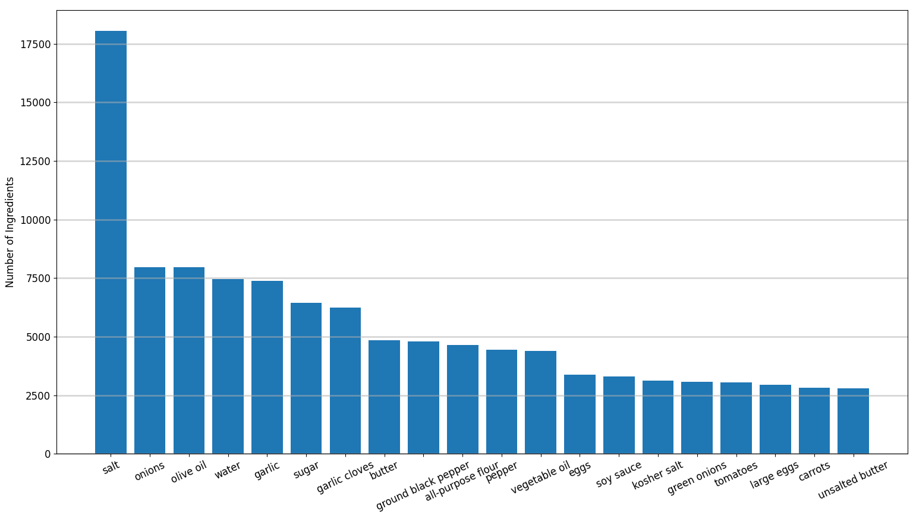

Introduction
XGBoost is one of the ML models that I've run across a lot but never played around with. So this is my attempt at getting familiar with the python implementation of XGBoost. Basically this involved following the docs here: https://xgboost.readthedocs.io/en/latest/
Data Exploration
I'm interested in cooking. So I decided to look for a dataset of recipes and found https://www.kaggle.com/kaggle/recipe-ingredients-dataset.
This dataset consists of recipes classified by cuisine with the recipe ingredients as features. Specifically the dataset consists of 39774 recipes, 20 cuisines, and 6714 unique ingredients. Arguably this dataset could use cleaning in the sense that some features could be consolidated for instance "olive oil" and "extra-virgin olive oil", on the other hand different cuisines may use different words for identical or substitutable ingredients. I chose not to consolidate any features.
The cuisines and their frequency in the dataset are given in the figure below. 
The twenty most frequent ingredients in all cuisine recipes in the dataset are given in the figure below. 
Eight most frequent ingredients of each cuisine which are not in the set of the eight most frequent ingredients of any other cuisine in the dataset are given below.
| Cuisine | Ingredients |
|---|---|
| brazilian | cachaca, lime |
| british | milk |
| cajun_creole | cajun seasoning, cayenne pepper, green bell pepper |
| chinese | corn starch |
| filipino | oil |
| french | |
| greek | fresh lemon juice, feta cheese crumbles, dried oregano |
| indian | cumin seed, ground turmeric, garam masala |
| irish | baking soda, potatoes |
| italian | grated parmesan cheese |
| jamaican | dried thyme, scallions, ground allspice |
| japanese | rice vinegar, sake, mirin |
| korean | seseme seeds |
| mexican | jalapeno chilies, chili powder |
| moroccan | ground ginger, ground cinnamon |
| russian | |
| southern_us | |
| spanish | tomatoes |
| thai | coconut milk |
| vietnamese | shallots, carrots |
If one fills in this table for the thirty most frequent ingredients rather than the eight, then every cuisine has ingredients in the column of ingredients. As we will see the eight most frequent elements produce nicer graphical representation. But the point I'm trying to drive home is that if we only used the thirty most frequent ingredients of each cuisine we should be able to categorize a lot of recipes. In other words classifying recipes according to cuisine using their ingredients appears to be a solvable problem.
Below is a bipartite graph representation of subsets of the eight most frequent ingredients for each cuisine. The white nodes are the cuisines, the edges to blue nodes are subsets of that cuisines eight most frequent ingredients. If there is more than one edge to a blue node, that nodes ingredients are in the set of the eight most frequent ingredients for each connected cuisine. For instance both Chinese and Korean recipes frequently use green onions and sesame oil.

Notice that the ingredients in the center of the graph such as garlic, onions, salt, sugar, and water are connected to most cuisines. Therefore their presence in a recipe likely tells us little about the recipes cuisine. Or more formally if all ingredient nodes represent sufficiently frequent ingredients, then highest degree nodes in the bipartite representation above likely have little power to classify recipes by cuisine. I hope to test this hypothesis below.
XGBoost Paramater Selection
XGBoost has a lot of parameters, see https://xgboost.readthedocs.io/en/latest/parameter.html. I chose to focus on the following.
| Parameter | Description | Range | Default | Sweep Values |
|---|---|---|---|---|
| eta | learning rate | [0,1] | 0.3 | 0.1,0.5,1 |
| gamma | min leaf loss to split a leaf | [0,inf] | 0 | 0,0.3 |
| max_depth | maximum tree depth | [0,inf] | 6 | 2,4,6 |
| lambda | L2 regulation | 1 | 0,1,3 | |
| subsample | fraction of data sampled before growing each tree | (0,1] | 1 | 0.7,1 |
| num_round | number of boosting rounds usually 2 | 2,4 |